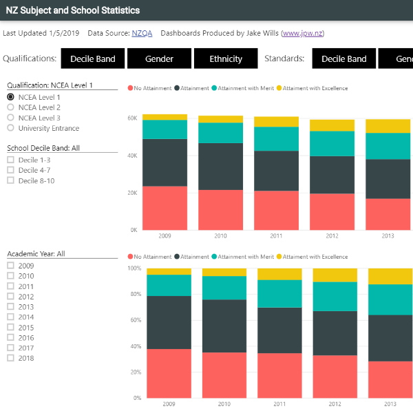

These are some of the things I get up to.
If you've got a project you want me to help out with contact me.
Remote Support
If you've got a project you want me to help out with contact me.
Remote Support

Site to generate statistical graphs for a wide range of data. Used by 400,000 last year.
I love making stuff in PowerBI, including custom visuals. See here for a few examples of things I have built.

Tool to easily analyse respond to feedback from Teachers Pay Teachers, and analyse sales data.
Free tweet wall with moderation features (for use at conferences).

Site to support teachers teaching maths in New Zealand with resources and helpful links.

Easily look at NZ School and Subject Data in a graphical way.
Easily look at NZ School and Subject Data in a graphical way.

Automatic emails (plus a few other things) to students, teachers and guardians.
Custom reporting for KAMAR including adding in teacher and student voice using google docs for easy reporting.

Free tools that help support schools using KAMAR do useful things.
Easy way to keep track of how much time you spend on projects.
A google apps script to easily invite a teacher to all classrooms of another teacher.

I developed this before selling it... makes it easy for schools to use data.

I also like to take photos of random things (particularly stars) and making cakes... all the cakes I made myself.